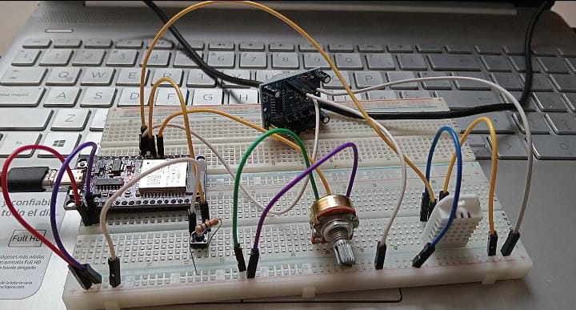
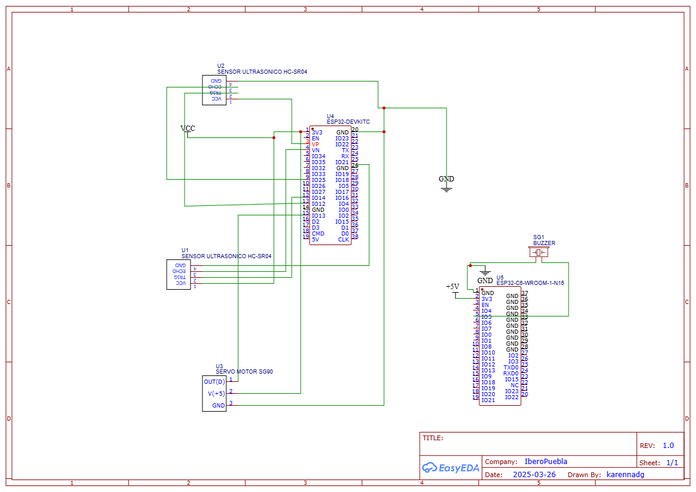
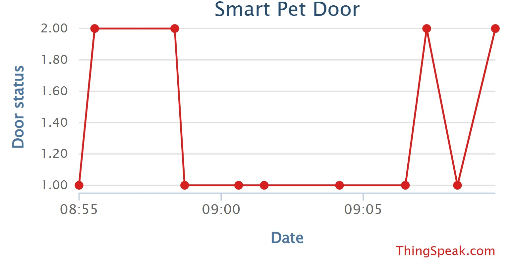

Portafolio de Actividades
Laboratorio de Redes Digitales
Departamento de Ciencias e Ingenierías | Universidad Iberoamericana Puebla, México.
Proyecto

- Resumen -
Este proyecto consiste en una puerta inteligente para perros que utiliza dos sensores ultrasónicos conectados a un ESP32. La puerta se abre automáticamente cuando un perro se acerca, girando 90° gracias a un motor servo. Se han colocado dos sensores, uno en cada lado de la puerta, para garantizar que siempre se abra hacia afuera. Un segundo ESP32 recibe una señal cada vez que la puerta se activa y emite un sonido mediante un buzzer, notificando la apertura. Además, el código en Arduino evita que ambos sensores activen la puerta simultáneamente.
- Funciones-
Las funciones principales del proyecto incluyen:
Detección de proximidad con sensores ultrasónicos para abrir la puerta.
Movimiento controlado de la puerta mediante un motor servo.
Restricción de apertura simultánea para garantizar un solo sentido de movimiento.
Notificación auditiva con buzzer al detectar una apertura.
Integración de impresión 3D para la estructura del servo y el eje de la puerta.
- Materiales -
Hardware:
2 × ESP32
2 × Sensores ultrasónicos HC-SR04
1 × Servo motor (SG90 o similar)
1 × Buzzer pasivo
Fuente de alimentación (5V)
Soporte impreso en 3D para el eje del servo y la puerta
Software:
Arduino IDE (para la programación de los ESP32)
CATIA (para modelado 3D)
Cura / PrusaSlicer (para preparación de impresión 3D)
- Diagrama de cableado -
El sistema se conecta de la siguiente manera:
Los sensores ultrasónicos están conectados a los pines GPIO del ESP32.
El servo motor recibe señal de control del ESP32 principal.
El buzzer está vinculado al segundo ESP32 para emitir el sonido de alerta.
Alimentación de 5V común para todos los componentes.

- Código -
El código en Arduino realiza las siguientes funciones:
Lectura de los sensores ultrasónicos para detectar la proximidad del perro.
Control del servo para girar la puerta 90° en la dirección correcta.
Bloqueo para evitar que ambos sensores activen el servo al mismo tiempo.
Comunicación entre ESP32 para que el buzzer suene al activarse la puerta y muestra del movimiento en ThingSpeak.
- Impresión en 3D -
Material: PLA o PETG
Altura de capa: 0.2 mm
Infill: 30%
Soportes: Sí, en la base del eje del servo y agregar adhesion
- Ensamblaje -
Imprimir y montar el soporte del servo en la puerta.
Conectar los sensores ultrasónicos en los extremos de la entrada.
Fijar el servo motor en su posición y conectar el eje impreso en 3D.
Instalar el ESP32 y realizar las conexiones según el diagrama.
Subir el código a los ESP32 y probar el sistema.
- Instrucciones de demostración y uso -
La puerta se abre automáticamente cuando un perro se acerca.
Siempre se abre hacia afuera, evitando colisiones.
Al abrirse, se envía una señal al otro ESP32 para activar el buzzer y en ThingSpeak se muestra el movimiento.
El código impide la activación simultánea de los sensores para un funcionamiento óptimo.
- Notas adicionales -
Asegurar una correcta alineación del servo y la puerta para un giro preciso.
Verificar el tiempo de respuesta de los sensores ultrasónicos.
Considerar el uso de una batería recargable si se desea hacer portátil.
- Resultados -
Movimiento en ThingSpeak

- Descargables -
Descargar codigo Arduino sensor codigo.ino
Descargar codigo Arduino buzzer codigo.ino